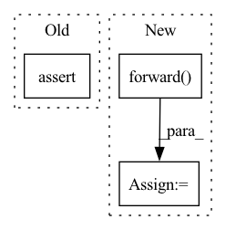

Pattern ID :27979
Before Change
// forward_steps
out_firsts = par.forward_steps(input[:, :, :-1])
assert torch.allclose(
out_firsts[:, :, par.delay : -1], out_all[:, :, :-4], atol=5e-6
)
After Change
par = co.Parallel(c5, c3, c1)
// forward
out_all = par.forward( input)
assert torch.allclose(
out_all, torch.tensor([[[4.0, 10.0, 18.0, 27.0, 36.0, 38.0, 32.0]]])
)
In pattern: SUPERPATTERN
Frequency: 3
Non-data size: 3
Instances Fragment ID: 82896432
Project Name: lukashedegaard/continual-inference
Commit Name: 41004011487d9a6173de53e168dafd8c600b6c89
Time: 2021-08-19
Author: lh@eng.au.dk
File Name: tests/continual/test_container.py
M Class Name: AnonimousClass
N Class Name: AnonimousClass
M Method Name: test_parallel(0)
N Method Name: test_parallel(0)
M Parent Class:
N Parent Class:
M File Name: tests/continual/test_container.py
N File Name: tests/continual/test_container.py
M Start Line: 105
M End Line: 126
N Start Line: 159
N End Line: 193
Before Change
output_next_frame = comodel.forward(input[:, :, -1])
// They are further apart now
assert torch.allclose(target, output_next_frame, atol=5e-2)
_, next_frame_top10 = torch.topk(output_next_frame, k=10)
next_frame_top10 = torch.topk(output_next_frame, k=10)[1][0].tolist()After Change
model.eval()
comodel.eval()
target = model.forward( sample)
// forward
output = comodel.forward(sample)
assert torch.allclose(target, output) Fragment ID: 82896433
Project Name: lukashedegaard/co3d
Commit Name: 44e4624108b83f8ba94cfb960cdf74f36bbd5703
Time: 2021-09-10
Author: lh@eng.au.dk
File Name: tests/cox3d/test_x3d.py
M Class Name: AnonimousClass
N Class Name: AnonimousClass
M Method Name: test_CoX3D(0)
N Method Name: test_CoX3D(0)
M Parent Class:
N Parent Class:
M File Name: tests/cox3d/test_x3d.py
N File Name: tests/cox3d/test_x3d.py
M Start Line: 601
M End Line: 687
N Start Line: 599
N End Line: 688
Before Change
next_frame_top10 = torch.topk(output_next_frame, k=10)[1][0].tolist()
// Top 1 is the same
assert len(set(target_top10[:1]) - set(next_frame_top10[:1])) == 0
// Top 10 is half-way overlapping
assert len(set(target_top10) - set(next_frame_top10)) == 5
After Change
target = model.forward(sample)
// forward
output = comodel.forward( sample)
assert torch.allclose(target, output)
// forward_steps
output = comodel.forward_steps(sample, pad_end=True) Fragment ID: 82896436
Project Name: lukashedegaard/co3d
Commit Name: 0b7612c3dc839d75811d3b7ccb59a7a0b453f051
Time: 2021-08-31
Author: lh@eng.au.dk
File Name: tests/cox3d/test_x3d.py
M Class Name: AnonimousClass
N Class Name: AnonimousClass
M Method Name: test_CoX3D(0)
N Method Name: test_CoX3D(0)
M Parent Class:
N Parent Class:
M File Name: tests/cox3d/test_x3d.py
N File Name: tests/cox3d/test_x3d.py
M Start Line: 601
M End Line: 687
N Start Line: 599
N End Line: 688